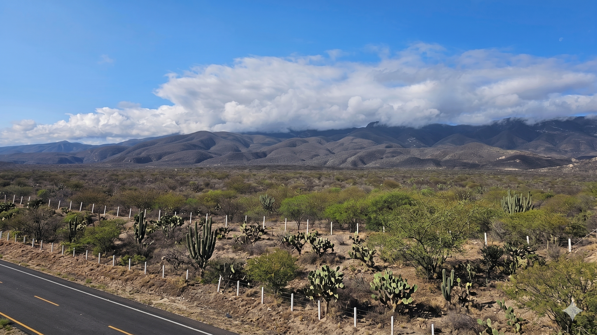

PATRIMONIO BIOCULTURAL
PATRIMONIO BIOCULTURAL
PATRIMONIO BIOCULTURAL
PATRIMONIO BIOCULTURAL

Un modelo de desarrollo de turismo biocultural con enfoque participativo para la conservación y el desarrollo local.
México posee un vasto patrimonio biocultural en sus comunidades indígenas, campesinas y rurales. Frente a la crisis ecológica, social y económica actual, el turismo biocultural emerge como una solución viable para mejorar la calidad de vida de las comunidades y conservar los ecosistemas.
A través de la investigación acción participativa (talleres, recorridos de campo y encuestas), establecemos desde los actores locales una propuesta de turismo que integra planes de manejo sostenible, agroecosistemas y conocimientos herbolarios, garantizando que las futuras generaciones hereden este invaluable patrimonio.

Diseñar un modelo de desarrollo de turismo del patrimonio biocultural en comunidades rurales con un enfoque participativo para el desarrollo local.


